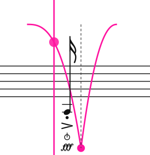
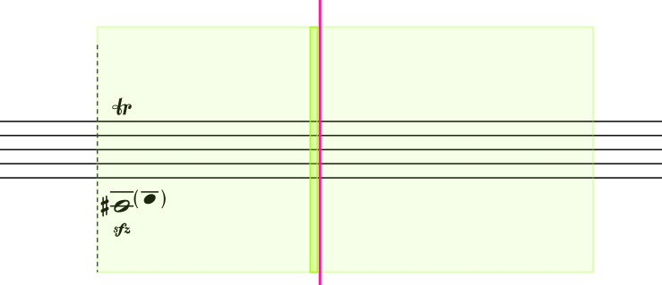
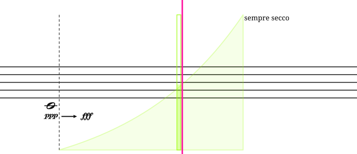
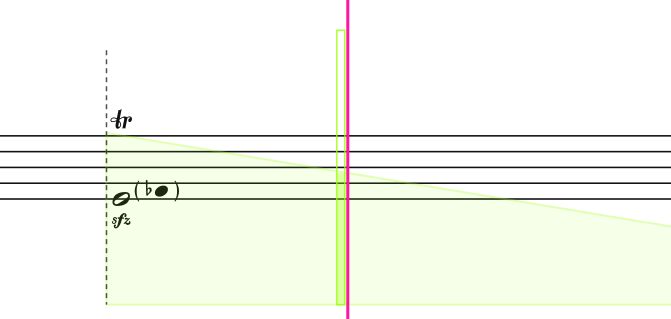
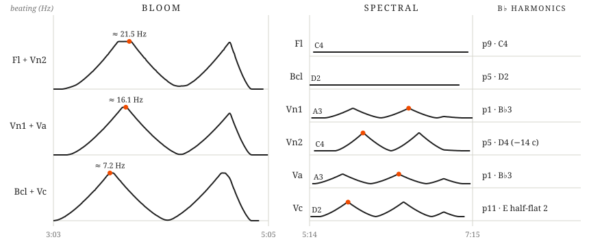
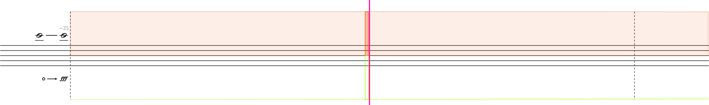
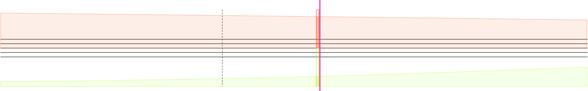
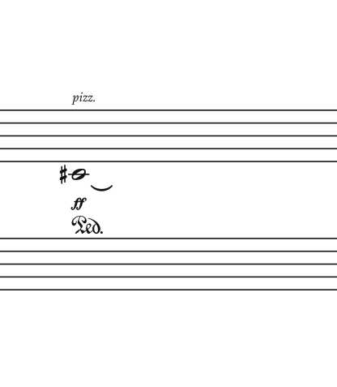
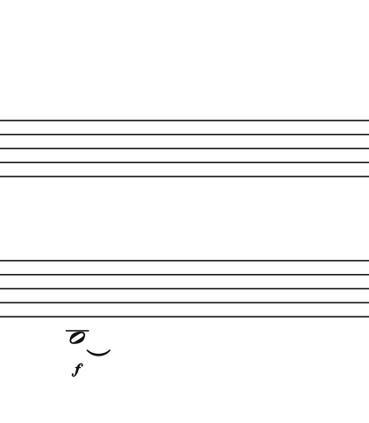

Scattered Substance, for flute, bass clarinet, piano and string quartet — Justin Yang
The score for Scattered Substance is a computer-animated score, served from the cloud and played in a web browser, like an online video game.
Flute, bass clarinet, piano, violin 1, violin 2, viola, cello.
Bass clarinet to low C.
The full score is in C. Parts will be transposed.
There are a number of animated conduction tools that are intuitive to follow and aid performers in realizing the score.
A scrolling cursor runs throughout the piece at a consistent speed and indicates when things are to be played. Notation is spaced proportionally in time — distance on the page equals duration. Bouncing-ball conductors aid with rhythmic precision. The dotted vertical line marks the go-time for events.
In the first example, you would play the Bartók pizzicato when the scrolling cursor reaches the go-line and the ball bounces. In the second example, you would begin the trill at the go-line and continue it for the length of the green curve — the trill ends where the curve ends.


This score uses graphic curves to describe continuous change. An animated curve follower appears along side the cursor and gives the real-time position in the gradient.

Gradient curves are used to describe crescendos. Play the crescendo from dynamic 1 to dynamic 2. The bottom of the curve corresponds to the starting dynamic, the top to the ending dynamic. The contour of the curve determines how the crescendo grows over time.

The curves describe the trill intensity, both volume and speed.
The middle movement of this piece uses acoustic beating as its central musical material. Performers use micro-glissandos over long durations to generate acoustic beating. Acoustic beating is commonly used to tune stringed instruments — play two strings and adjust the tuning of one until the beating disappears. In a similar way, this section is less about trying to play a particular pitch, but more about using small deviations of pitch to modulate the speed and timbre of the acoustic beating.
There are two sections in this movement — Bloom and Spectral. In the Bloom section, pairs of performers glissando away from each other — one goes up in pitch while the other goes down — and then back together. The chart below gives the approximate frequency at the maximum beating rate.
The strategy for the Spectral section is different. Performers begin on a pitch and then glissando towards and away from a target harmonic partial.

I have prepared demo recordings for the Bloom section at the links below. The demos isolate the pairs and demonstrate how the maximum beating levels sound and then provide a two-part demo of the Bloom section.
Notation


The notation for the acoustic beating movement employs two curves for each performer: a green one at the bottom of the staff and an orange one at the top. The green curve indicates dynamic level and the orange curve indicates beating/glissando level. The dotted vertical go-lines are rearticulation points — the rearticulation should happen at the go-line: breathe/take up bow before, and rearticulate at the line. The pitch range notated at the beginning of each section is approximate, you will calibrate the glissando pitch using beating speed and timbre. The animated curves can assist.
(with no release sign) — hold the pedal until the sound has died away or until the next note.


Let ring slurs — let the note ring. Ordinary notes: hold the key. Plucked notes: hold the pedal.
sempre secco — continue secco for the crescendo gestures.
Dynamics. In the first movement, every strike carries its own marking. In the third movement, a dynamic holds until the next marking.